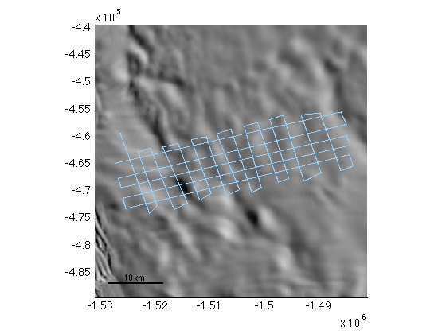
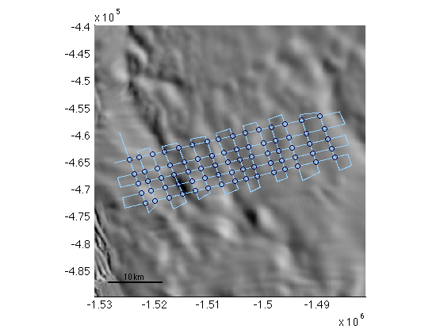
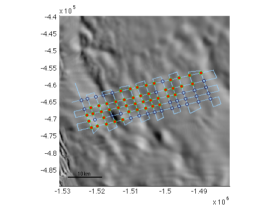
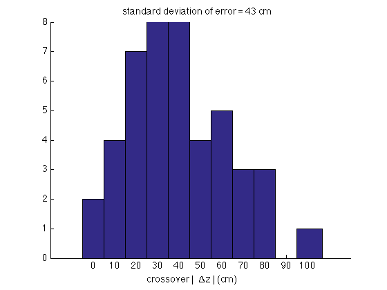

crossovers documentation
crossovers is part of Antarctic Mapping Tools for Matlab (Greene et al., 2017). Click here for a complete list of functions in AMT.
The crossovers function efficiently finds crossover locations of georeferenced or polar stereographic coordinates. This function works for self-intesecting flight lines or multiple flight lines concatenated into a single array.
Contents
Syntax
[xi,yi] = crossovers(x,y) [lati,loni] = crossovers(lat,lon) [...,zi,ti] = crossovers(...,z,t) [...] = crossovers(...,'maxdt',max_time_diff) [...] = crossovers(...,'mindt',min_time_diff) [...] = crossovers(...,'maxdist',max_distance) [...] = crossovers(...,'inrange',latlim_or_xlim,lonlim_or_ylim) [...] = crossovers(...,'tile',TilePreference) [...] = crossovers(...,'interp',InterpolationMethod)
Description
[xi,yi] = crossovers(x,y) returns location(s) of crossover points in the arrays x,y, where x and y are polar stereographic (ref -71) coordinates. x and y must be column vectors.
[lati,loni] = crossovers(lat,lon) returns georeferenced location(s) of crossovers if inputs are geo coordinates. Geo coordinates are assumed if no element in the first argument has an absolute value greater than 90 and no element in the second argument has an absolute value greater than 360. lat and lon must be column vectors.
[...,zi,ti] = crossovers(...,z,t) returns elevations and times of crossovers. zi and ti are both two-column vectors whose first column corresponds to the elevation and time of the first measurement in time, and column 2 corresponds to the second pass. Elevation change at crossovers dzi/dti may be calculated as diff(zi,1,2)./diff(ti,1,2).
[...] = crossovers(...,'maxdt',max_time_diff) limits results to crossovers separated in time by less than or equal to max_time_diff. Using a max_time_diff value of 150 is one way of considering only crossovers from the same field campaign year. Units of max_time_diff are days.
[...] = crossovers(...,'mindt',min_time_diff) limits results to crossovers separated in time by at least min_time_diff. Using min_time_diff = 1/96 (15 minutes, that is) is one way to prevent the intersection-finding function from getting confused. Units of min_time_diff are days.
[...] = crossovers(...,'maxdist',max_distance) limits results to crossovers that are within max_distance meters of the nearest measurement in both passes. Using max_distance = 100 ensures that every value in (xi,yi) or (lati,loni) lies within 100 meters of a measurement from pass 1 and pass 2.
[...] = crossovers(...,'inrange',latlim_or_xlim,lonlim_or_ylim) limits analysis to a subset geoquad or polar stereographic bounding box. If input locations are geo coordinates, bounding limits are assumed to be geo coordinates. If inputs coordinates are polar stereographic meters, xlim and ylim are assumed. For example, crossovers(lat,lon,'inrange',[-70 -65],[110 115]) subsets lat,lon to the geoquad given by 70°S to 65°S and 110°E to 115°E.
[...] = crossovers(...,'tile',TilePreference) specifies a solver setting as 'on', 'off', or 'auto'. For inputs of more than 15,000 points, calculating path intersections all at once with tiling off crashes my computer. This function is designed to intelligently solve sections at a time by breaking the domain into multiple tiles. Default TilePreference is 'auto'.
[...] = crossovers(...,'interp',InterpolationMethod) specifies method of interpolation for zi and ti. Default method is 'linear', but you may also choose 'cubic'. Cubic interpolation requires more points in each direction and it's very slightly slower than linear.
crossovers versus pathcrossingsps71
The crossovers function is similar to another tool in the Antarctic Mapping Tools package, pathcrossingsps71. Here are the differences:
- pathcrossingsps71 finds intersections between two separate datasets, say a grounding line and a flight line. pathcrossingsps71 is preferred when you do not want to find self intersections and/or when data are not linked to temporal information.
- crossovers finds self intersections within the same flight line. crossovers is more computationally efficient than pathcrossingsps71 and offers options for limiting temporal and spatial separation.
Example: Plot data
Consider a self-intersecting flight line of ~9000 data points. The Antarctic Mapping Tools package includes a sample flight line dataset called samplegrid. Let's take a look. Start by making a 50 km wide modismoa map centered on the data points. Specify low contrast to prevent the background image from being too visually busy. Below I'm using my rgb function to get RGB values of light blue and dark blue.
% Load sample data: load samplegrid % Zoom a map to the region of interest: mapzoomps(mean(lat),mean(lon),'mapwidth',50) % Plot a low-contrast MODIS MOA image: modismoaps('contrast','low') % Plot the flight line: plotps(lat,lon,'.','color',rgb('light blue')) % Add a scalebar: scalebarps('length',10)
Example: Find all crossover locations
To find all crossover locations the syntax is easy:
[latc,lonc] = crossovers(lat,lon); plotps(latc,lonc,'o','color',rgb('dark blue'))
Example: Limit crossovers to given conditions
Sometimes you may want to specify conditions for crossovers. Often times we want to filter out processes that take place on short or long time scales. Here let's say we only want crossovers where the different legs of the flight were more than one hour apart and less than 2.5 hours apart. Further, we want to make sure that each crossover location lies within 45 meters of a measurement on each leg of the crossover:
[latc,lonc,zc] = crossovers(lat,lon,z,t,... 'mindt',1/24,... % crossovers separated by > 1 hr 'maxdt',2.5/24,... % crossovers separated by < 2.5 hrs 'maxdist',45,... % within 45 m of a measurement 'interp','cubic'); % use cubic interpolation plotps(latc,lonc,'go','markerfacecolor','r')
Example: Estimation of errors
A common way to quantify measurement errors is to look at the difference between measurements at crossover locations. Above we calculated zc, which is a 45x2 matrix of elevations at each of the 45 crossover locations. Column 1 contains elevations at crossover locations for the first leg of each crossover and column 2 contains elevations for the second leg of each crossover. In this example we should expect very little change in surface elevation to take place on this grounded ice in less than 2.5 hours, so we take the difference between column 1 and column 2 of zc as an estimate of measurement error:
zerror = zc(:,2)-zc(:,1); figure hist(100*abs(zerror),0:10:100) box off xlabel 'crossover | \Deltaz | (cm)' title(['standard deviation of error = ',sprintf('%2.f',std(100*zerror)),' cm'])
A standard deviation of 43 cm is pretty close to what we'd expect--the samplegrid data file contains elevations that were obtained by adding 40-cm gaussian noise to Bedmap2 data.
Citing AMT
If this function or any other part of Antarctic Mapping Tools is useful for you, please cite the paper that describes AMT.
Greene, C. A., Gwyther, D. E., & Blankenship, D. D. Antarctic Mapping Tools for Matlab. Computers & Geosciences. 104 (2017) pp.151-157. doi:10.1016/j.cageo.2016.08.003.
Author Info:
The crossovers function, supporting documentation, and the Antarctic Mapping Tools package were written by Chad A. Greene of The University of Texas at Austin's Institute for Geophysics, June 2015. This function includes Douglas M. Schwarz's intersections function as a subfunction.